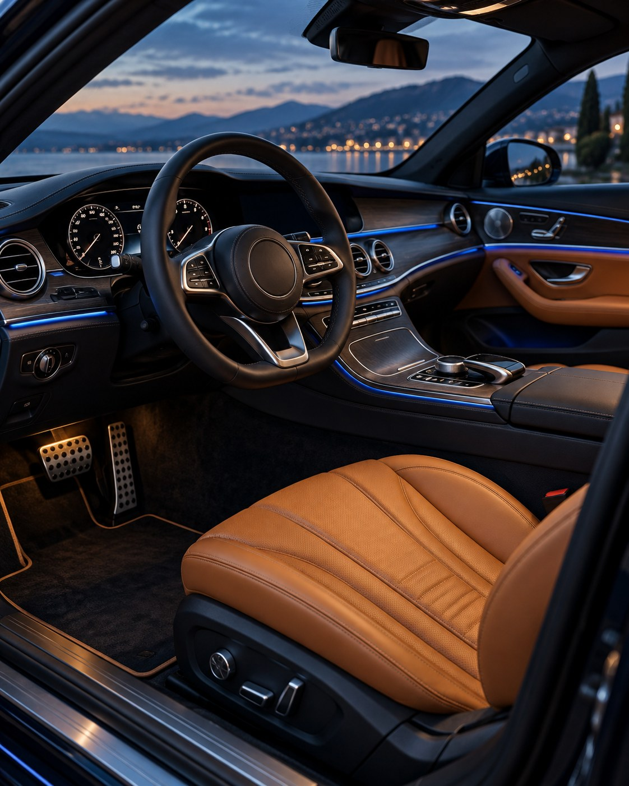

01FOUNDATION
Первый маршрут
Для тех, кто начинает с основ и хочет последовательно прийти к самостоятельному вождению.
Обсудить обучениеИСКУССТВО УПРАВЛЯТЬ
Уверенность за рулём — особое чувство свободы.
Начните знакомство с новым уровнем вождения.
01 / ФИЛОСОФИЯ GRAND DRIVE
У каждого свой путь к уверенности. Кто-то впервые садится за руль. Кто-то возвращается после паузы. А кто-то хочет чувствовать автомобиль тоньше.
Наша идея — обучение с вниманием к человеку: его целям, привычкам и темпу. Без суеты. С уважением к вашему времени.
02 / ВАША СЛЕДУЮЩАЯ ГЛАВА
Три направления для разных целей.
Программы — концепция предложения;
условия уточняются перед записью.
Для тех, кто начинает с основ и хочет последовательно прийти к самостоятельному вождению.
Обсудить обучениеДля возвращения к практике: почувствовать габариты, освоиться в городе и вернуть спокойствие.
Обсудить обучениеДля конкретных задач: парковка, знакомые маршруты и более точное понимание своего автомобиля.
Обсудить обучение
THE ART OF DRIVING03 / ВНИМАНИЕ К ДЕТАЛЯМ
Хорошее обучение начинается с диалога. Что для вас важно? Где вы хотите чувствовать себя увереннее? Из ответов складывается ваш следующий шаг.
Обсудим опыт, пожелания и задачи.
Определим подходящее направление обучения.
04 / НОВЫЙ УРОВЕНЬ СВОБОДЫ
Оставьте суету за пределами салона.
Сделайте первый шаг к уверенности за рулём.